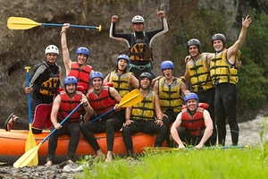

At Jonah MU2K Rafting Co., our purpose is to ignite a passion for wild waters and
transform every
river run into a life-defining journey. Guided by our motto, "Conquer the Currents,
Claim the Rush,"
we strive to bridge the raw energy of nature with modern, high-tier expedition
standards. Our
mission focuses on delivering safety-first, adrenaline-charged white water
experiences
that empower
adventurers of all skill levels to step out of their comfort zones, connect deeply
with
the
outdoors, and forge unforgettable memories on the river.
History
Founded in the heart of the river country, MU2K Whitewater Adventures began with a
single raft, a
beat-up pickup truck, and an unshakeable belief that the river brings out the best
in people. What
started as a small group of local guides taking thrill-seekers down local Class III
rapids quickly
grew as word spread about MU2K unmatched energy, top-tier safety standards, and
legendary campfire
storytelling. Over the years, the outfit expanded its fleet, upgraded to
state-of-the-art equipment,
and recruited some of the most skilled, certified river runners in the industry.
Today, MU2K Whitewater Adventures has evolved from a local secret into a premier
adventure
destination for families, corporate teams, and extreme sports enthusiasts alike.
While the company
has grown, its core spirit remains unchanged: a commitment to wild places, river
conservation, and
giving every guest an adrenaline-fueled experience they will talk about for a
lifetime. Whether
navigating roaring white water or guiding scenic sunset floats, MU2K continues to
lead the way down
the river, one paddle stroke at a time.